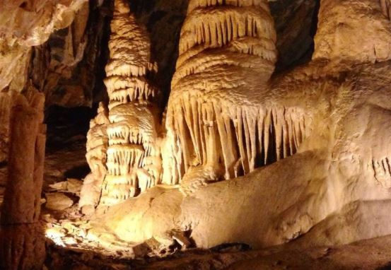

Minnetonka Cave
Minnetonka Cave is a limestone cave a half-mile long of which 1,800 feet has been developed for guided tours to the public. The elevation of the cave is 7,700 feet. It is located on the Cache National Forest near St. Charles, Idaho, and is administered by Scenic Canyons Recreational Services under a special use permit from the Caribou-Targhee National Forest. Please be aware to not bring anything -including clothing- that has been in any other cave. This includes hats, shoes, belts jewelry, cameras, cell phones, etc. Due to the westward spread of White Nose syndrome (WNS), restrictions are currently in place at Minnetonka Cave to prevent introduction of this bat disease into Idaho. It is possible for humans to spread the disease if clothing or equipment has been exposed to the fungus. Introduction of this disease would devastate local bat populations and possibly close the cave to tours and visitors. For more information visit: whitenosesyndrome.org. Thanks for understanding.